راهنمای کاربری فریمور RESONIK برای رادیو ATS Mini
گیرندهی جیبی LW · MW · SW · FM با مودولاسیونهای AM · LSB · USB · CW
{{VERSION}}{{DATE_FA}} · {{DATE_EN}}
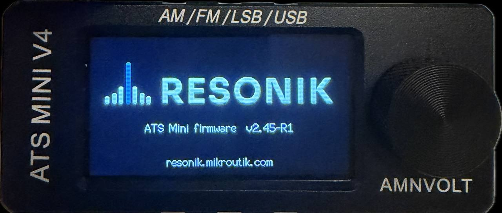
resonik.mikroutik.comنصب از مرورگر، نسخهی تازهی همین راهنما و آخرین تغییرات
فهرست
۱دربارهی RESONIK
۲نصب و بهروزرسانی
۳کنترلها و صفحهی اصلی
۴منوR2
۵حالت CW
۶نقشهی باند
۷ساعت، منطقهی زمانی و ساعت دوگانه
۸زمان باقیماندهی باتری
۹تضعیف خودکار
۱۰بیکنهاR2
۱۱اسکن حافظههاR2
۱۲ثبت سیگنالR2
۱۳شرایط انتشار امواجR2
۱۴برنامهی ایستگاههای EiBiR2
۱۵کنترل CAT از کامپیوترR2
۱۶دیکودر FT8 و FT4R3
۱۷دیکودر CWR3
۱۸اسکنر باندR3
۱۹قفل فرکانس، توان Wi-Fi و سرعت پردازندهR3
۲۰صفحهی وب رادیو و Wi-Fi
۲۱ارسال بازخورد و رفع اشکال
۲۲سازندگان و مجوز
این راهنما برای فریمور {{VERSION}} نوشته شده و با هر نسخهی جدید بهروز میشود. نسخهی تازه همیشه در resonik.mikroutik.com است. نسخهی فریمور رادیو را در Menu → System → About ببینید.
بخشهایی که با R2 مشخص شدهاند از نسخهی 2.45-r2 و بخشهای R3 از نسخهی 2.45-r3 به بعد در دسترساند. نام گزینههای منو به همان شکل انگلیسی که روی صفحهی رادیو دیده میشود آمده است.
۱دربارهی RESONIK
RESONIK فریموری رایگان و متنباز برای رادیوی جیبی ATS Mini (با پردازندهی ESP32-S3 و تراشهی گیرندهی SI4732) است. این فریمور بر پایهی فریمور رسمی و متنباز ats-mini نسخهی 2.45 ساخته شده، همهی امکانات آن را حفظ میکند و امکاناتی برای شنوندگان موج کوتاه و آماتورهای رادیویی به آن اضافه میکند.
حالت CW با نمایش فرکانس واقعی سیگنال، فیلتر باریک و گام 10 Hz
نقشهی باند IARU منطقهی ۱ روی اسکیل و انتخاب خودکار LSB/USB
ساعت دوگانهی محلی و UTC، مناطق زمانی با ساعت تابستانی، همگامسازی مطمئن ساعت
تخمین زمان باقیماندهی باتری و تضعیف خودکار برای سیگنالهای خیلی قوی
منوی جدید با شش دسته و برگههای تنظیمات تمامصفحه (R2)
ردیاب بیکنها، اسکن حافظهها، ثبت سیگنال، شرایط انتشار امواج، برنامهی EiBi با روزهای پخش و کنترل CAT (R2)
دیکودر FT8/FT4 و CW، اسکنر باند، نقشهی باند خودکار برای منطقههای ۱، ۲ و ۳، قفل فرکانس، توان Wi-Fi و سرعت پردازنده (R3)
باندها، مودولاسیونها، حافظهها، RDS، Wi-Fi و بلوتوث همانند فریمور رسمی کار میکنند. راهنمای کامل فریمور رسمی (به انگلیسی): esp32-si4732.github.io/ats-mini/manual.html
۲نصب و بهروزرسانی
پیش از نصب از رادیو نسخهی پشتیبان بگیرید (راهنمای Backup در سایت ats-mini). همیشه میتوان با USB به فریمور رسمی برگشت.
نصب از مرورگر (بار اول)
سایت resonik.mikroutik.com را در Chrome یا Edge روی کامپیوتر باز کنید (گوشی پشتیبانی نمیشود).
رادیو را با کابل USB-C که داده را منتقل میکند (نه فقط کابل شارژ) به کامپیوتر وصل و روشن کنید.
نوع حافظه را ببینید: در فریمور رسمی Settings → About و در RESONIK Menu → System → About. خط PSRAM یکی از این دو را نشان میدهد: 8192K یا 2048K.
در بخش Install سایت، دکمهی مربوط را بزنید: برای 8192K دکمهی 8 MB (OSPI) و برای 2048K دکمهی 2 MB (QSPI). سپس درگاه رادیو را از فهرست انتخاب کنید.
گزینهی Erase device را علامت نزنید تا تنظیمات و حافظهها حفظ شوند، سپس Install را بزنید. نصب حدود دو دقیقه طول میکشد و رادیو خودش دوباره روشن میشود.
بهروزرسانی از راه Wi-Fi (نسخههای بعدی)
وقتی RESONIK روی رادیو نصب است، نسخههای بعدی را بدون کابل نصب کنید: رادیو را به Wi-Fi وصل کنید (بخش ۲۰)، سپس Menu → System → Update FW. گزینهی Check نسخهی تازه را پیدا میکند و Update آن را نصب میکند. تنظیمات حفظ میشوند. در نسخهی R1 همین گزینه در Settings → Update FW است.
نصب دستی
فایل resonik-ats-mini-{{VERSION}}-ospi.zip (یا -qspi) را از صفحهی Releases در GitHub بگیرید و با esptool این فایلها را بنویسید: ats-mini.ino.bootloader.bin در 0x0، ats-mini.ino.partitions.bin در 0x8000، boot_app0.bin در 0xe000 و ats-mini.ino.bin در 0x10000.
نشانی پروژه: github.com/ep3mhb/resonik-ats-mini
۳کنترلها و صفحهی اصلی
همهی کارها با یک ولوم (پیچ تنظیم) انجام میشود که هم میچرخد و هم فشرده میشود:
چرخاندنتنظیم فرکانس؛ در منو جابهجایی میان گزینهها و تغییر مقدارکلیکفشردن و رها کردن سریع (کمتر از نیم ثانیه): باز کردن منو و انتخاب گزینهفشار کوتاهنگه داشتن حدود یک ثانیه: تنظیم صدا، یا کار دوم هر گزینه؛ در منو، بستن منوفشار طولانینگه داشتن بیش از دو ثانیه: خاموش و روشن کردن صفحهی نمایش (رادیو کار میکند)
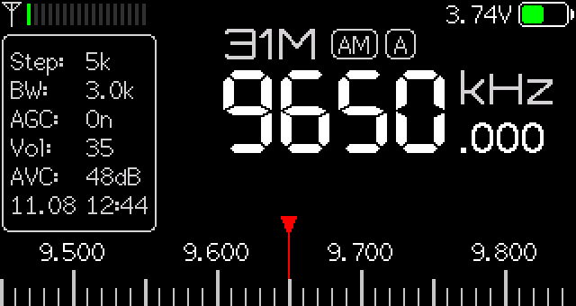
صفحهی اصلی روی باند ۳۱ متر
بخش صفحه
معنی
بالا، چپ
قدرت سیگنال
بالا، راست
باتری: ولتاژ یکی در میان با زمان باقیمانده (بخش ۸)، یا علامت شارژ
کادر اطلاعات (چپ)
Step گام تنظیم، BW پهنای فیلتر، AGC کنترل بهره یا تضعیف، Vol صدا، AVC، و در پایین تاریخ و ساعت
وسط
نام باند، مودولاسیون (مثلاً AM) و فرکانس
پایین
اسکیل فرکانس با نشانگر قرمز؛ روی باندهای آماتوری نوار رنگی نقشهی باند (بخش ۶)
برای عوض کردن باند: کلیک ← Tuning → Band، باند را با چرخاندن انتخاب کنید و کلیک کنید. منو بسته میشود و ولوم بلافاصله فرکانس را تنظیم میکند.
۴منوR2
با یک کلیک، منو با شش دسته باز میشود. هر دسته یک دکمهی بزرگ رنگی با آیکون است. با چرخاندن ولوم انتخاب را جابهجا کنید و با کلیک دسته را باز کنید. در هر دسته، اولین دکمه Back (بازگشت) است. دستهای که بیش از پنج گزینه دارد صفحهی دوم دارد؛ نقطههای پایین صفحه نشان میدهند در کدام صفحه هستید. فشار کوتاه منو را از هر جا میبندد.
Volume, AGC/ATTN, Auto Att., AVC, FM Stereo, SoftMute, Squelch
Memory حافظه
Memory, Logger, Mem Scan
Ham & SWL آماتوری و موج کوتاه
Band Plan, Beacons, Calibration, CW Decoder, CW Strip, FT8/FT4, Load EiBi, Plan Area, Propagation
Display نمایش
Brightness, Menu Style, Scroll Dir., Sleep Mode, Sleep Timer, Theme, UI Layout, Zoom Menu
System سیستم
About, Bluetooth, Date/Time, DSP Patches, Knob, Off Timer, TCP Port, Time Zone, Update FW, USB Port, Wi-Fi, Wi-Fi Power, Performance
کنترلهای شنیداری و برگههای تنظیمات
کنترلهایی مانند Band، Mode، Step یا Volume فهرست خود را مثل قبل باز میکنند؛ پس از انتخاب، منو بسته میشود تا ولوم بلافاصله فرکانس را تنظیم کند. تنظیمات به صورت برگهی تمامصفحه باز میشوند: یا فهرستی از مقدارها، یا یک عدد با نوار. با چرخاندن مقدار را عوض کنید؛ کلیک مقدار را نگه میدارد و به همان دسته برمیگردد.
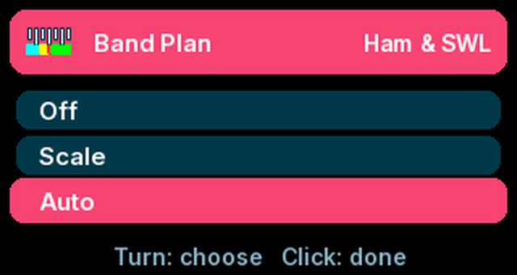
برگهی فهرستی: Band Plan
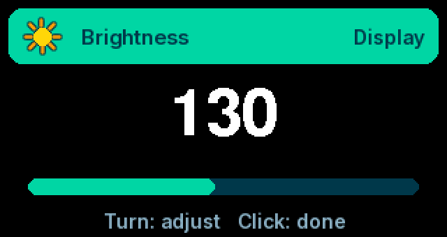
برگهی عددی: Brightness
تنظیم ولوم: System → Knob
دو نوع ولوم روی این رادیوها نصب میشود: 20 clicks یا 30 clicks در هر دور. اگر ولوم یک گام را جا میاندازد، یا برای یک گام دو بار باید چرخاند، مقدار دیگر را انتخاب کنید. (در صفحهی وب رادیو همین گزینه Half-step Encoder نام دارد.)
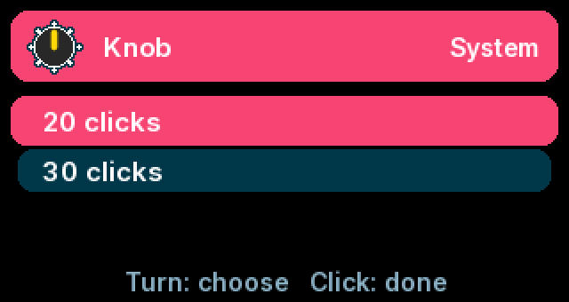
برگهی Knob
منوی کلاسیک
Menu → Display → Menu Style → Classic منوی فهرستی فریمور رسمی را برمیگرداند: کنترلهای شنیداری در Menu و بقیه در Menu → Settings، با همین نامها. گزینهی Tiles منوی جدید را برمیگرداند.
گزینهی Scan در Tuning نمودار قدرت سیگنال در طول باند را رسم میکند (تصویری لحظهای از باند)؛ رادیو روی ایستگاهها توقف نمیکند. Seek به ایستگاه بعدی میرود. برای ایستادن روی ایستگاهها از Scanner استفاده کنید (بخش ۱۸).
۵حالت CW
Menu → Tuning → Mode → CW (پس از AM). صفحه فرکانس خود سیگنال CW را نشان میدهد، همانطور که یک فرستندهگیرندهی CW نشان میدهد: آنقدر تنظیم کنید که فرکانس با فرکانس اعلامشده یکی شود و تن در وسط فیلتر قرار گیرد.
پهنای فیلتر
تن
کاربرد
0.5k (پیشفرض)
500 Hz
باندهای شلوغ، سیگنالهای ضعیف
1.0k
1000 Hz
پیدا کردن سیگنال، تنظیم سریعتر
1.2k و پهنتر
700 Hz
گوش دادن به کل باند
گام از 10 Hz شروع میشود؛ آن را در Menu → Tuning → Step عوض کنید. CW از مقدار کالیبراسیون USB همان باند استفاده میکند (Menu → Ham & SWL → Calibration).
۶نقشهی باند
روی باندهای آماتوری ۱۶۰ تا ۱۰ متر، نواری رنگی زیر اسکیل نقشهی باند IARU منطقهی ۱ را نشان میدهد و نام بخشی که در آن هستید کنار نشانگر میآید.
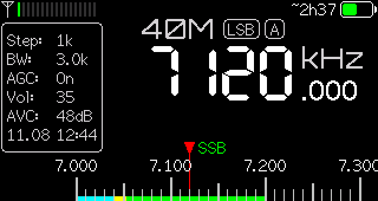
۴۰ متر، بخش SSB
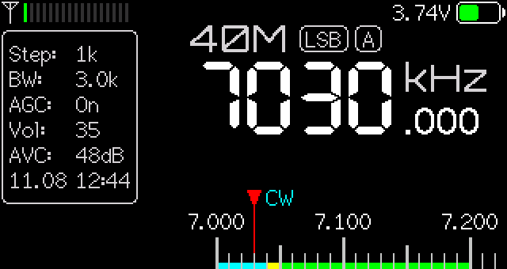
۴۰ متر، بخش CW
رنگ
بخش
فیروزهای
فقط CW
زرد
مدهای باریک: CW و دیجیتال (FT8، PSK، RTTY…)
قرمز
بیکنهای بینالمللی (NCDXF/IARU)
سبز
همهی مدها، از جمله صوتی SSB
خاکستری
ماهواره و FM (۱۰ متر)
Menu → Ham & SWL → Band Plan:
Off: بدون نوار.
Scale: فقط نوار و نام بخش.
Auto (پیشفرض): با ورود به هر بخش، مد، فیلتر و گام هم خودکار تنظیم میشوند: CW با فیلتر باریک در بخش CW، USB برای دیجیتال و بیکنها، و در بخش صوتی LSB زیر ۱۰ مگاهرتز و USB بالای آن. پیام کوتاهی آن را تأیید میکند. اگر خودتان مد را عوض کنید، انتخاب شما تا خروج از آن بخش میماند. در AM فقط وقتی از بیرون وارد باند آماتوری میشوید عوض میشود.
منطقهی نقشه: Plan AreaR3
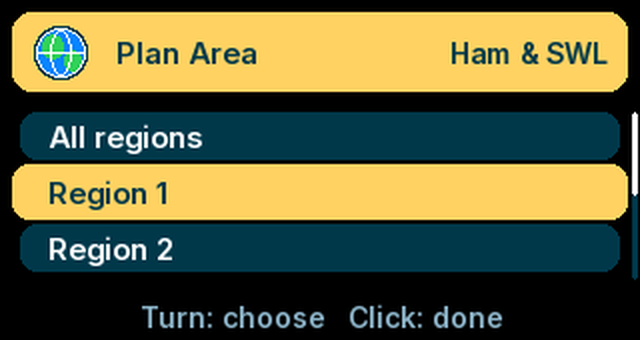
برگهی Plan Area
گزینه
آنچه نشان میدهد
All regions
باندهای همهی منطقهها: جزئیات منطقهی ۱ هر جا که منطقهی ۱ آن باند را دارد، و بخشهای پهنتر منطقههای ۲ و ۳ بیرون از آن (۸۰ متر تا 4000 و ۴۰ متر تا 7300 کیلوهرتز)
Region 1
اروپا، آفریقا، خاورمیانه (پیشفرض)
Region 2
قارهی آمریکا: ۱۶۰ متر از 1800، ۸۰ متر تا 4000، ۴۰ متر تا 7300 کیلوهرتز
Region 3
آسیا و اقیانوسیه: ۱۶۰ متر از 1800، ۸۰ متر تا 3900، ۴۰ متر تا 7300 کیلوهرتز
Iran (EP)
منطقهی ۱ بدون باندهای ۱۶۰، ۸۰ و ۳۰ متر که در جدول ملی تخصیص ندارند
UAE (A6)
منطقهی ۱ با ۱۶۰ متر محدود به 1810–1850 کیلوهرتز
بخشهایی که کشور انتخابشده اجازه نمیدهد خاکستری تیره و با نام NOT ALLOWED نشان داده میشوند.
نقشههای منطقهی ۲ و ۳ سادهشده و فقط برای راهنماییاند. تخصیصهای ملی متفاوتاند؛ پیش از ارسال با رادیوی دیگر، مجوز خود را بررسی کنید.
۷ساعت، منطقهی زمانی و ساعت دوگانه
Menu → System → Time Zone ابتدا UTC و سپس همهی اختلافهای زمانی را نشان میدهد، با نام شهرها کنار آنها؛ مثلاً دبی و مسقط کنار UTC+4 و تهران کنار UTC+3:30. شهرهای دارای ساعت تابستانی خودکار تغییر میکنند.
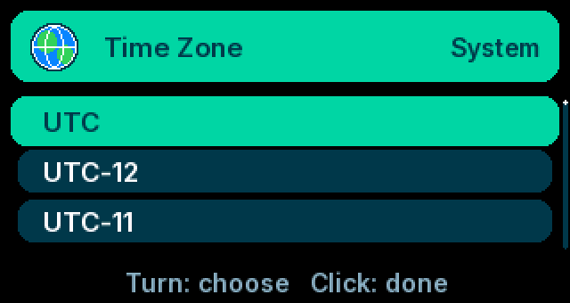
برگهی Time Zone
وقتی منطقهی زمانی UTC نیست، خط ساعت در کادر اطلاعات هر چند ثانیه یک بار میان تاریخ و ساعت محلی و ساعت UTC عوض میشود. UTC زمانی است که برنامهی ایستگاهها، ثبت سیگنال و جدول بیکنها با آن کار میکنند. Time: --:-- یعنی ساعت هنوز تنظیم نشده است.
Menu → System → Date/Time ساعت جاری را به UTC نشان میدهد. با چرخاندن مقدار را عوض کنید، با کلیک به بخش بعد بروید و با فشار کوتاه ذخیره کنید. اگر چیزی را عوض نکنید ساعت دست نمیخورد.
تنظیم خودکار ساعت
رادیو باتری ساعت ندارد و با خاموش شدن، ساعت از دست میرود. برای تنظیم خودکار در هر بار روشن شدن:
شبکهی Wi-Fi خود را به رادیو اضافه کنید (بخش ۲۰).
Menu → System → Wi-Fi → Sync Only را انتخاب کنید. رادیو وصل میشود، ساعت را تنظیم میکند و برای صرفهجویی در باتری Wi-Fi را خاموش میکند. (حالت Connect هم ساعت را تنظیم میکند و وصل میماند.)
پیامها: Time synchronized (از سرور زمان اینترنت)، Time set from web (شبکه سرورهای زمان را مسدود میکند و ساعت از یک سرور وب خوانده شد)، یا Time sync failed با خط دومی که علت را میگوید. بدون Wi-Fi، ایستگاه FM دارای ساعت RDS هم ساعت را تنظیم میکند؛ یا در صفحهی وب رادیو Use Browser Date/Time ساعت و منطقهی زمانی گوشی یا کامپیوتر را کپی میکند.
۸زمان باقیماندهی باتری
روی باتری، ولتاژ در بالای صفحه یکی در میان با تخمین زمان باقیماندهی شنیدن نمایش داده میشود، مثلاً ~8h20 (هشت ساعت و بیست دقیقه). علامت ~ یعنی مصرف معمول فرض شده است؛ پس از حدود ده دقیقه رادیو مصرف واقعی خود را اندازه میگیرد و ~ حذف میشود. روشنایی صفحه، بلندی صدا و Wi-Fi نتیجه را تغییر میدهند. هنگام شارژ با USB علامت شارژ نمایش داده میشود.
۹تضعیف خودکار
در AM، وقتی Menu → Audio → AGC/ATTN روی On است، سیگنال خیلی قوی (یک ایستگاه موج متوسط محلی یا یک فرستندهی بزرگ در شب) میتواند گیرنده را اشباع کند و صدای ناصاف و ایستگاههای ناخواسته بسازد. رادیو در این حالت پلهپله تضعیف اضافه میکند و روی ایستگاههای ضعیفتر آن را برمیدارد. هنگام فعال بودن، کادر اطلاعات Att: A12 را نشان میدهد (A یعنی خودکار). خاموش کردن: Menu → Audio → Auto Att.؛ تنظیم دستی AGC/ATTN همیشه اولویت دارد.
۱۰بیکنهاR2
هجده بیکن پروژهی بینالمللی NCDXF/IARU به نوبت روی فرکانسهای 14100، 18110، 21150، 24930 و 28200 کیلوهرتز، هر کدام ده ثانیه، ارسال میکنند و هر سه دقیقه تکرار میشوند. هر بیکن نشانهی خود را با CW میفرستد و سپس چهار خط تیره با توانهای 100 W، 10 W، 1 W و 0.1 W؛ تعداد خطهایی که میشنوید کیفیت مسیر را نشان میدهد.
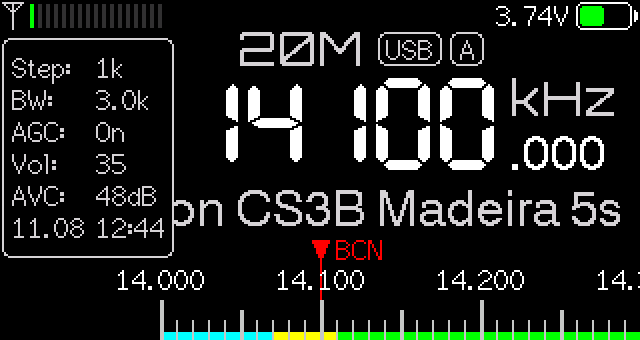
روی 14100: نام بیکن در حال ارسال و ثانیههای باقیمانده
روی یکی از این پنج فرکانس (CW یا USB)، خط ایستگاه بیکن در حال ارسال و ثانیههای باقیمانده را نشان میدهد، مثلاً Beacon 4S7B Sri Lanka 6s. ساعت رادیو باید تنظیم باشد.
Menu → Ham & SWL → Beacons و انتخاب یک نشانه، رادیو را دنبالکنندهی آن بیکن میکند: هر ده ثانیه همراه بیکن از ۲۰ متر تا ۱۰ متر باند عوض میکند و در زمان سکوت آن منتظر میماند. تنظیم دستی فرکانس یا انتخاب Off آن را پایان میدهد.
۱۱اسکن حافظههاR2
Menu → Memory → Mem Scan حافظههای ذخیرهشده (دستکم دو حافظه) را یکییکی بررسی میکند و روی هر حافظهای که سیگنال دارد میایستد؛ چهار ثانیه پس از قطع سیگنال ادامه میدهد. سیگنال یعنی سطح Squelch همان مودولاسیون اگر تنظیم کرده باشید، وگرنه SNR برابر 6 dB یا بیشتر. چرخاندن ولوم یا کلیک اسکن را متوقف میکند و رادیو روی همان حافظه میماند.
۱۲ثبت سیگنالR2
Menu → Memory → Logger هر ۱۰ ثانیه، هر دقیقه یا هر پنج دقیقه یک خط ثبت میکند: ساعت UTC، فرکانس، مودولاسیون، باند، قدرت سیگنال (dBµV)، SNR (dB) و نام ایستگاه. رادیو را شب روی یک فرکانس بگذارید تا ببینید مسیر کی باز و بسته میشود.
فایل را از صفحهی وب رادیو با Log (CSV) دانلود کنید و در برنامهی صفحهگسترده (مثل Excel) باز کنید. گزینهی Clear log در همان منو (با کلیک برای تأیید) آن را پاک میکند. ثبت در حجم یک مگابایت خودبهخود متوقف میشود.
۱۳شرایط انتشار امواجR2
Menu → Ham & SWL → Propagation شار خورشیدی (SFI)، تعداد لکههای خورشیدی، شاخصهای A و K، سطح اشعهی X و وضعیت روز و شب باندهای 80–40، 30–20، 17–15 و 12–10 متر را از سایت hamqsl.com (N0NBH) نشان میدهد. دادهها هر بار که Wi-Fi وصل است (از جمله همگامسازی ساعت هنگام روشن شدن) و حداکثر هر ۱۵ دقیقه یک بار گرفته میشوند. SFI بالاتر و K پایینتر یعنی شرایط بهتر در باندهای بالاتر.
۱۴برنامهی ایستگاههای EiBiR2
Menu → Ham & SWL → Load EiBi برنامهی فصلی ایستگاههای پخش موج کوتاه را همراه با روزهای پخش بارگذاری میکند (به Wi-Fi نیاز دارد). ایستگاهی که فقط آخر هفته پخش دارد فقط در همان روزها نمایش داده میشود و زبان و منطقهی هدف پس از نام میآید، مثلاً BBC World Service [E > ME] (انگلیسی، به خاورمیانه). پس از بهروزرسانی از نسخهی R1، برنامه را یک بار دیگر بارگذاری کنید.
۱۵کنترل CAT از کامپیوترR2
Menu → System → USB Port → CAT رادیو را وادار میکند به فرمانهای Kenwood TS-480 روی درگاه USB پاسخ دهد، تا نرمافزارها بتوانند فرکانس و مودولاسیون را بخوانند و تنظیم کنند و قدرت سیگنال را بخوانند. در نرمافزار (flrig، Hamlib، WSJT-X فقط دریافت، fldigi یا نرمافزار لاگ) رادیوی Kenwood TS-480 (Hamlib rig 2028) را روی درگاه سریال رادیو انتخاب کنید؛ سرعت اهمیتی ندارد. فرمانهای ارسال پذیرفته نمیشوند، چون این دستگاه فقط گیرنده است. برای ابزارهای کنترل از راه دور و عکس از صفحه، به Ad hoc برگردید.
۱۶دیکودر FT8 و FT4R3
Menu → Ham & SWL → FT8/FT4 صفحهای تمامصفحه باز میکند که سیگنالهای FT8 را از صدای خود رادیو دیکود میکند. رادیو روی فرکانس FT8 همان باندی که در آن هستید (یا ۴۰ متر) با USB و فیلتر 3.0k تنظیم میشود. زیر سربرگ، آبشار طیف (واترفال) حرکت میکند و پس از هر دورهی ۱۵ ثانیهای پیامها با گزارش سیگنال (dB)، فرکانس صوتی (Hz) و متن نمایش داده میشوند؛ فراخوانهای CQ سبز هستند.
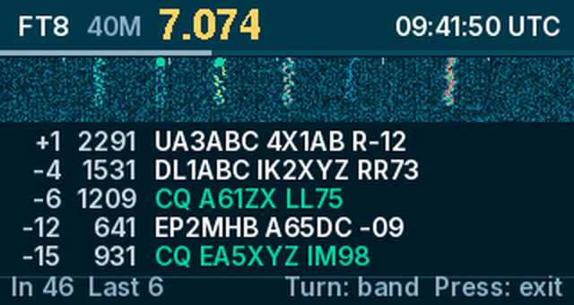
صفحهی FT8 روی ۴۰ متر
چرخاندن: عوض کردن باند: ۱۶۰، ۸۰، ۴۰، ۳۰، ۲۰، ۱۷، ۱۵، ۱۲ و ۱۰ متر، و پس از آن فرکانسهای FT4 باندهای ۸۰ تا ۱۰ متر (FT4 زرد، با دورههای ۷٫۵ ثانیهای).
کلیک: پاک کردن فهرست. فشار کوتاه: خروج؛ رادیو دقیقاً به حالت قبل برمیگردد.
اگر ساعت تنظیم باشد (همگامسازی با Wi-Fi) از همان دورهی اول دیکود میکند. بدون ساعت هم دیکود میکند: سربرگ No clock: syncing را نشان میدهد تا زمانبندی دورهها را از ایستگاههایی که میشنود پیدا کند (معمولاً یکی دو دقیقه)، سپس Synced to band.
پایین، چپ: In سطح صدایی است که به دیکودر میرسد (۱۰ تا ۱۵۰ خوب است) و Last تعداد پیامهای آخرین دوره.
این صفحه به برد V4B نیاز دارد که خط بلندگو را به پردازنده وصل کرده است؛ روی بردهای دیگر پیام No audio on the decoder input نمایش داده میشود. هنگام باز بودن صفحه، Wi-Fi موقتاً خاموش میشود. در بردهایی که صدا را پس از تقویتکنندهی بلندگو میگیرند، بلندگو روشن میماند (Spk کنار سطح صدا).
سیگنالهای FT8 اغلب ۱۵ تا ۲۰ دسیبل زیر نویز هستند. آنتن تلسکوپی داخل خانه تعداد کمی از آنها را میشنود: کنار پنجره یا در بالکن، یا چند متر سیم وصلشده به آنتن، تفاوت زیادی ایجاد میکند. شارژر، لامپ LED و لپتاپ را از رادیو دور نگه دارید و رادیو را با باتری کار کنید.
۱۷دیکودر CWR3
Menu → Ham & SWL → CW Decoder کد مورس را در صفحهای تمامصفحه به متن تبدیل میکند، همراه با سرعت (WPM)، فرکانس تن، نوار سطح و نشانگر کلید. طوری تنظیم کنید که تن در وسط فیلتر CW باشد. چرخاندن: تنظیم فرکانس، کلیک: پاک کردن متن، فشار کوتاه: خروج. سرعت خودبهخود از حدود ۵ تا ۴۰ کلمه در دقیقه دنبال میشود. صداهای ناگهانی جوّی و تقتقها نادیده گرفته میشوند؛ حرفهایی که خوانده نمیشوند با * نشان داده میشوند.
Menu → Ham & SWL → CW Strip → On متن دیکودشده را در حالت CW در پایین صفحهی اصلی نشان میدهد. مانند صفحهی FT8 به برد V4B نیاز دارد و وقتی Wi-Fi خاموش است کار میکند.
۱۸اسکنر باندR3
Menu → Tuning → Scanner از فرکانس فعلی در طول باند حرکت میکند و روی سیگنالها میایستد (سطح Squelch اگر تنظیم شده باشد، وگرنه SNR برابر 6 dB یا بیشتر). در لبهی باند از سر دیگر ادامه میدهد.
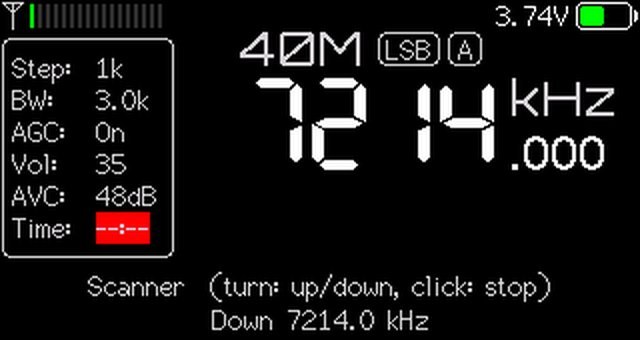
اسکنر در حال حرکت به پایین روی ۴۰ متر
چرخاندن: جهت را تعیین میکند: راست به بالا، چپ به پایین، و فوراً ادامه میدهد.
کلیک: اسکنر را روی همان فرکانس متوقف میکند.
در SSB و CW تا وقتی ایستگاه شنیده میشود میماند و چهار ثانیه پس از قطع آن ادامه میدهد. روی ایستگاههای پخش AM و FM که هیچوقت ساکت نمیشوند، روی هر ایستگاه پنج ثانیه میماند؛ در FM پس از هر ایستگاه ۲۰۰ کیلوهرتز بعدی را رد میکند تا یک ایستگاه قوی دو بار آن را متوقف نکند.
گام حرکت همان گام تنظیم است، دستکم 1 kHz در SSB، 500 Hz در CW و 100 kHz در FM. اگر روی نویز زیاد میایستد، اول سطح Squelch را تنظیم کنید.
۱۹قفل فرکانس، توان Wi-Fi و سرعت پردازندهR3
Menu → Tuning → Freq Lock → On: ولوم به جای تنظیم فرکانس، بلندی صدا را تنظیم میکند و تنظیم رقمبهرقم (فشار و چرخاندن) غیرفعال میشود. علامت قفل کنار مد نشان میدهد قفل روشن است؛ پس از خاموش و روشن کردن هم میماند.
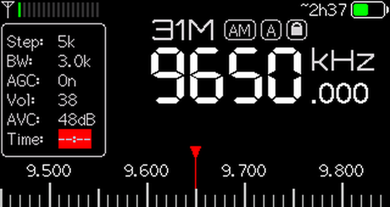
علامت قفل کنار مد
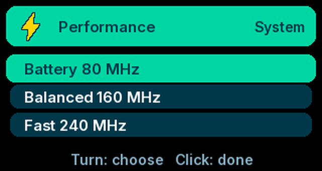
برگهی Performance
Menu → System → Wi-Fi Power: Normal (17 dBm)، Low (13 dBm) یا Lowest (8.5 dBm). توان کمتر به بردهایی که هنگام ارسال Wi-Fi ریاستارت میشوند کمک میکند و کمی باتری صرفهجویی میکند، ولی برد Wi-Fi کمتر میشود.
Menu → System → Performance: Battery 80 MHz (مانند فریمور رسمی)، Balanced 160 MHz یا Fast 240 MHz. سرعت بیشتر صفحه و منوها را سریعتر میکند و باتری بیشتری مصرف میکند؛ تخمین زمان باتری تفاوت را نشان میدهد. صفحهی FT8 هنگام باز بودن همیشه با 240 MHz کار میکند.
۲۰صفحهی وب رادیو و Wi-Fi
رادیو یک صفحهی وب برای تنظیمات، حافظهها و دانلود فایل ثبت سیگنال دارد. حالتهای Menu → System → Wi-Fi:
حالت
کار
Off
Wi-Fi خاموش (کمترین مصرف باتری)
AP Only
رادیو شبکهی خودش را میسازد: به شبکهی ATS-Mini وصل شوید و http://10.1.1.1 را باز کنید
AP+Connect
شبکهی خودش و همزمان اتصال به شبکهی خانه
Connect
اتصال به شبکهی خانه؛ نشانی IP رادیو در صفحهی سوم About یا با atsmini.local
Sync Only
هنگام روشن شدن وصل میشود، ساعت را تنظیم میکند و خاموش میشود
افزودن شبکهی خانه: AP Only را انتخاب کنید، با گوشی یا کامپیوتر به شبکهی ATS-Mini وصل شوید، http://10.1.1.1 را باز کنید، در صفحهی Wi-Fi نام و رمز شبکه را وارد و ذخیره کنید، سپس Connect یا Sync Only را انتخاب کنید.
در صفحهی http://10.1.1.1/update میتوان فایل …-ota.bin یک نسخه را مستقیم نصب کرد.
۲۱ارسال بازخورد و رفع اشکال
هر گزارش، چه یک ایراد کوچک و چه یک پیشنهاد، به بهتر شدن نسخهی بعدی کمک میکند. در گروه تلگرام پیام بدهید یا در GitHub یک Issue باز کنید: github.com/ep3mhb/resonik-ats-mini/issues. لطفاً بنویسید:
مدل رادیو (V3، V4 یا V4B)
نسخهی فریمور (Menu → System → About)
چه کاری انجام دادید و چه اتفاقی افتاد
در صورت امکان یک عکس یا ویدیوی کوتاه از صفحه
مشکلات رایج
مشکل
راهحل
ولوم گامها را جا میاندازد یا برای هر گام دو بار باید چرخاند
Menu → System → Knob: مقدار دیگر (20 یا 30 clicks)
ساعت --:-- است
بخش ۷: Wi-Fi → Sync Only یا تنظیم دستی
نام بیکن نمایش داده نمیشود
ساعت باید تنظیم و درست باشد
دکمهی Install درگاهی نشان نمیدهد
کابل USB دیگری (کابل داده) امتحان کنید؛ Chrome یا Edge روی کامپیوتر
منوی قدیمی را میخواهید
Menu → Display → Menu Style → Classic
برنامهی EiBi روزها را نشان نمیدهد
یک بار دیگر Load EiBi
صفحهی FT8 یا CW: No audio یا In 0
این صفحهها برد V4B میخواهند (صفحهی Hardware سایت)
FT8 چیزی دیکود نمیکند
باند دیگری را امتحان کنید (۲۰ یا ۱۰ متر در روز، ۴۰ متر در شب)؛ رادیو را کنار پنجره ببرید و شارژر را جدا کنید
۲۲سازندگان و مجوز
نسخهی RESONIK: EP2MHB (محمد بحرالعلوم). بر پایهی ats-mini اثر PU2CLR (Ricardo Caratti)، Volos Projects، Ralph Xavier، Sunnygold، Goshante، G8PTN (Dave)، R9UCL (Max Arnold)، Marat Fayzullin و همهی مشارکتکنندگان. دیکودر FT8 از ft8_lib اثر Karlis Goba استفاده میکند، به پیروی از فورک epiHATR؛ چند اصلاح از فورکهای jokubasver و mattafaak آمده است. کد منبع با مجوز MIT در GitHub است.
RESONIK وابسته به سازندگان رادیوهای ATS Mini نیست. نصب فریمور غیررسمی با مسئولیت خود شماست؛ نسخهی پشتیبان امکان بازگشت را میدهد.
 RESONIK
RESONIK